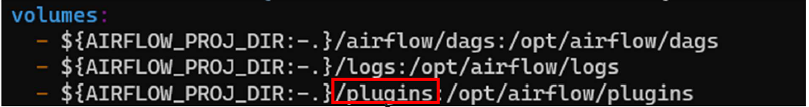

Operator Baisc
DAG Creation, Bash Operator, Task Performance Subject,
Engineering
template
Author
Kwangmin Kim
Published
May 1, 2023
- 오퍼레이터
- 특정 행위를 할 수 있는 기능을 모아 놓은 클래스, 설계도
- Task
- 오퍼레이터에서 객체화(인스턴스화)되어 DAG에서 실행 가능한 오브젝트
- Bash 오퍼레이터
- 쉘 스크립트 명령을 수행하는 오퍼레이터
- 스케줄러
- DAG Parsing 후 DB에 정보저장
- DAG 시작시간 결정
- 워커
- 실제 작업 수행
- task가 실행되어야 하는 시간(주기)을 정하기 위한 다섯개의 필드로 구성된 문자열
- Task 연결 방법 종류
- >>, << 사용하기 (Airflow 공식 추천방식)
- 함수 사용하기
- 복잡한 Task 는 어떻게 연결하는가?
- Unix/Linux Shell 명령을 이용하여 만들어지고 인터프리터에 의해 한 줄씩 처리되는 파일
- Echo, mkdir, cd, cp, tar, touch 등의 기본적인 쉘 명령어를 입력하여 작성하며 변수를 입력받거나 For 문, if 문 그리고 함수도 사용 가능
- 확장자가 없어도 동작하지만 주로 파일명에 .sh 확장자를 붙인다.
- 쉘 명령어를 이용하여 복잡한 로직을 처리하는 경우
- sftp를 통해 파일을 받은 후 DB에 Insert & tar.gz으로 압축해두기
- 쉘 명령어 재사용을 위해
- 문제점
- 컨테이너는 외부의 파일을 인식할 수 없다.
- 컨테이너 안에 파일을 만들어주면 컨테이너 재시작시 파일이 사라진다.
- 해결방법
- 빨간 네모박스의 plugins에 shell script를 저장한다.
- 이메일 전송해주는 오퍼레이터
- 이메일 전송을 위해 사전 셋팅 작업 필요
- 구글 메일 서버 사용
- G-mail \(\rightarrow\) 설정 \(\rightarrow\) 모든 설정보기 \(\rightarrow\) 전달및POP/IMAP \(\rightarrow\) IMAP사용
- 구글 계정관리 \(\rightarrow\) 보안 \(\rightarrow\) 2단계 인증 \(\rightarrow\) 앱비밀번호 셋팅
- Docker-compose.yaml 편집 (environment 항목에 추가)
1 DAG Basic
1.1 Airflow DAG 생성
1.2 Subject of Task Performance
2 Cron Schedule
2.1 Cron Scheduling
{minutes} {hour} {day} {month} {weekday}
| Number | Special Characters | Description |
|---|---|---|
| 1 | * | 모든 값 |
| 2 | - | 범위 지정 |
| 3 | , | 여러 값 지정 |
| 4 | / | 증가값 지정 |
| 5 | L | 마지막 값 (일, 요일에만 설정 가능) * 일에 L 입력시 해당 월의 마지막 일 의미 ※ 요일에 L 입력시 토요일 의미 |
| 6 | # | 몇 번째 요일인지 지정 |
| Cron schedule | Description | Note |
|---|---|---|
| 15 2 * * * | 매일 02시 15분 | |
| 0 * * * * | 매시 정각 | |
| 0 0 1 * * | 매월 1일 0시 0분 | |
| 10 1 * * 1 | 매주 월요일 1시 10분 | 0: 일요일, 1: 월요일, 2: 화요일, 3:수요일, 4: 목요일, 5: 금요일, 6: 토요일 |
| 0 9-18 * * * | 매일 9시부터 18시까지 정각마다 | |
| 0 1 1,2,3 * * | 매월 1일, 2일 3일만 1시에 | |
| */30 * * * | 삼십분마다 (0분, 30분) | |
| 10-59/30 * * * * | 10분부터 삼십분마다 (10분, 40분) | |
| 10 1 * * 1-5 | 평일만 01시 10분 | |
| 0 */2 * * * | 2시간 마다 (0시, 02시, 04시 …) | 1-23/2: 1시부터 2시간 마다 |
| 0 0 | ||
| 0 0 */2 * * | 짝수일 0시 0분 | |
| 10 1 L * * | 매월 마지막 일 01시 10분 | |
| 10 1 * * 6#3 | 매월 세 번째 토요일 01시 10분 |
3 Task Connection
3.1 Task Connection Methods
4 Shell Script
4.1 What is Shell Script ?
4.2 Why to Need Shell Script?
4.3 Worker 컨테이너가 쉘 스크립트를 수행하려면?

5 Email Operator
email_t1 = EmailOperator(
task_id='email_t1',
to='hjkim_sun@naver.com',
subject='Airflow 처리결과',
html_content=’정상 처리되었습니다.<br/>’
)5.1 Presetting
5.1.1 Google Setting
5.1.2 Airflow
AIRFLOW__SMTP__SMTP_HOST: 'smtp.gmail.com'
AIRFLOW__SMTP__SMTP_USER: '{gmail 계정}'
AIRFLOW__SMTP__SMTP_PASSWORD: '{앱비밀번호}'
AIRFLOW__SMTP__SMTP_PORT: 587
AIRFLOW__SMTP__SMTP_MAIL_FROM: '{gmail 계정}'